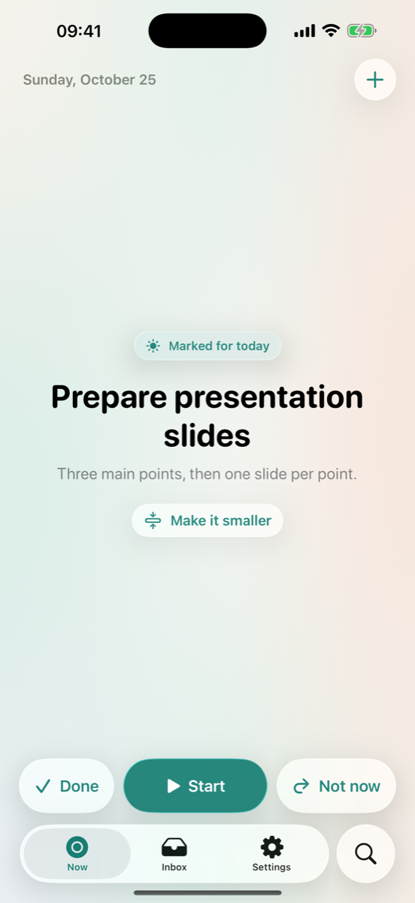
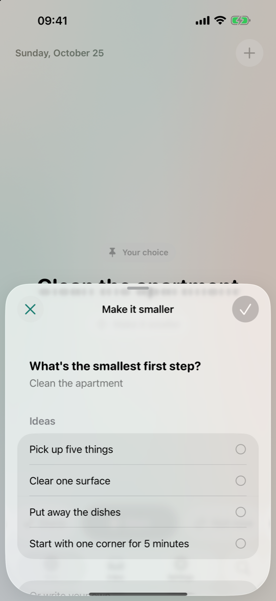
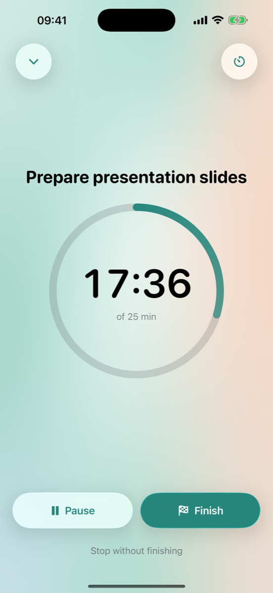

One thing.
Not one hundred.
Write down what's on your mind. OneThing shows you one task to start with, and why it's the one.



Start, instead of planning.
Capture in seconds.
Just a title. Dates, notes and reminders are there when you want them, never required.
Make it smaller.
When a task feels too big, get a tiny first step, like “Clear one surface”. Made on your device from built-in ideas.
Focus, your way.
Start with or without a timer. It keeps time on your Lock Screen and in the Dynamic Island.
No guilt.
Skip without judgment.
Rest a task until later, tomorrow or someday. Skipped tasks step back instead of nagging.
No streaks, no red badges.
Nothing is ever “overdue”. Come back after a week and your one thing is simply waiting.
Explains itself.
Every suggestion says why it was chosen, from simple rules you can read. You can always pick another.
Private. Free. No account.
On your iPhone.
Tasks are stored on your device. iCloud sync is optional and goes through your own private iCloud. There's no OneThing server.
Nothing to sell.
No ads, no subscriptions, no in-app purchases, no analytics, no tracking.
Your data, your call.
Lock the app with Face ID, hide task names on the Lock Screen, and export everything as JSON or CSV.
Everywhere you need it.
Widgets
Your one thing and a quick-add button on the Home Screen and Lock Screen.
Siri and Shortcuts
“Add a task to OneThing.” “What's my one thing in OneThing?” “Start focusing in OneThing.”
iPhone and iPad
With Dark Mode, Dynamic Type and VoiceOver support.
OneThing is a simple productivity app. It isn't a medical device and doesn't diagnose or treat any condition.